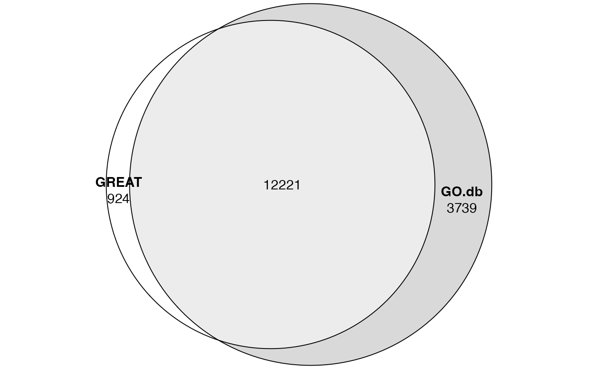

vignettes/suppl_compare_GO.Rmd
suppl_compare_GO.RmdAccording to the GREAT website, the GO gene sets they use were generated between 2011 and 2012. In this document, we are going to compare the GO gene sets integrated in GREAT web service and the GO gene sets integrated in local GREAT analysis.
GREAT does not provide files of gene sets they use, but in the result table from GREAT analysis, there is a column “Hyper_Total_Genes” which is the total number of genes in each gene set, which we can use to compare.
Total number of genes in gene sets is not affected by which input regions to use. Here we simply generate a random set of input regions.
## Warning: package 'S4Vectors' was built under R version 4.3.2
gr = randomRegions(genome = "hg19")We first perform the online GREAT analysis and retrieve enrichment result for the GO:BP ontology.
job = submitGreatJob(gr)
tbl = getEnrichmentTables(job)
tb1 = tbl[["GO Biological Process"]]Next we perform local GREAT analysis. We use the same TSS definition as online GREAT, but here GO gene sets are from the GO.db package (versio 3.14).
res2 = great(gr, "GO:BP", "GREAT:hg19", min_gene_set_size = 0)
tb2 = getEnrichmentTable(res2, min_region_hits = 0)tb1 and tb2 contain the full set of GO terms under test, thus, we can compare the GO terms in the two sources:

So basically, the two GO sources have very high agreement, but GO.db has more additional GO terms.
The absolute numbers of GO terms are less important because some very general GO terms might be filtered out by one source. For the ease of comparison, we take the common GO terms in the two sources:
rownames(tb1) = tb1$ID
rownames(tb2) = tb2$id
cn = intersect(rownames(tb1), rownames(tb2))
length(cn)## [1] 12221
tb1 = tb1[cn, ]
tb2 = tb2[cn, ]
head(tb1)## ID name
## GO:0072227 GO:0072227 metanephric macula densa development
## GO:0072240 GO:0072240 metanephric DCT cell differentiation
## GO:0072236 GO:0072236 metanephric loop of Henle development
## GO:0072233 GO:0072233 metanephric thick ascending limb development
## GO:0021793 GO:0021793 chemorepulsion of branchiomotor axon
## GO:0072218 GO:0072218 metanephric ascending thin limb development
## Binom_Genome_Fraction Binom_Expected Binom_Observed_Region_Hits
## GO:0072227 0.0004115094 0.4115094 4
## GO:0072240 0.0004115094 0.4115094 4
## GO:0072236 0.0007332667 0.7332667 5
## GO:0072233 0.0004364032 0.4364032 4
## GO:0021793 0.0005255500 0.5255500 4
## GO:0072218 0.0005314570 0.5314570 4
## Binom_Fold_Enrichment Binom_Region_Set_Coverage Binom_Raw_PValue
## GO:0072227 9.720313 0.004 0.0008575702
## GO:0072240 9.720313 0.004 0.0008575702
## GO:0072236 6.818802 0.005 0.0009572741
## GO:0072233 9.165835 0.004 0.0010636800
## GO:0021793 7.611074 0.004 0.0020862570
## GO:0072218 7.526479 0.004 0.0021715840
## Binom_Adjp_BH Hyper_Total_Genes Hyper_Expected
## GO:0072227 1 1 0.07558359
## GO:0072240 1 1 0.07558359
## GO:0072236 1 6 0.45350150
## GO:0072233 1 2 0.15116720
## GO:0021793 1 1 0.07558359
## GO:0072218 1 4 0.30233440
## Hyper_Observed_Gene_Hits Hyper_Fold_Enrichment
## GO:0072227 1 13.230390
## GO:0072240 1 13.230390
## GO:0072236 2 4.410128
## GO:0072233 1 6.615193
## GO:0021793 1 13.230390
## GO:0072218 1 3.307596
## Hyper_Gene_Set_Coverage Hyper_Term_Gene_Coverage Hyper_Raw_PValue
## GO:0072227 0.0007132668 1.0000000 0.07558359
## GO:0072240 0.0007132668 1.0000000 0.07558359
## GO:0072236 0.0014265340 0.3333333 0.06980381
## GO:0072233 0.0007132668 0.5000000 0.14545810
## GO:0021793 0.0007132668 1.0000000 0.07558359
## GO:0072218 0.0007132668 0.2500000 0.26977100
## Hyper_Adjp_BH
## GO:0072227 1
## GO:0072240 1
## GO:0072236 1
## GO:0072233 1
## GO:0021793 1
## GO:0072218 1
head(tb2)## id description
## GO:0072227 GO:0072227 metanephric macula densa development
## GO:0072240 GO:0072240 metanephric DCT cell differentiation
## GO:0072236 GO:0072236 metanephric loop of Henle development
## GO:0072233 GO:0072233 metanephric thick ascending limb development
## GO:0021793 GO:0021793 chemorepulsion of branchiomotor axon
## GO:0072218 GO:0072218 metanephric ascending thin limb development
## genome_fraction observed_region_hits fold_enrichment p_value
## GO:0072227 0.0004132595 4 10.532260 0.0006376033
## GO:0072240 0.0006330327 4 6.875723 0.0029966060
## GO:0072236 0.0007636721 5 7.124388 0.0007882910
## GO:0072233 0.0004381542 4 9.933847 0.0007913279
## GO:0021793 0.0005259029 4 8.276352 0.0015416652
## GO:0072218 0.0005332099 4 8.162933 0.0016206009
## p_adjust mean_tss_dist observed_gene_hits gene_set_size
## GO:0072227 1 447070 1 1
## GO:0072240 1 447070 1 3
## GO:0072236 1 379879 2 6
## GO:0072233 1 447070 1 2
## GO:0021793 1 270810 1 1
## GO:0072218 1 447070 1 4
## fold_enrichment_hyper p_value_hyper p_adjust_hyper
## GO:0072227 13.088109 0.07640523 0.9224111
## GO:0072240 4.362703 0.21215916 1.0000000
## GO:0072236 4.362703 0.07116884 0.9224111
## GO:0072233 6.544054 0.14697657 1.0000000
## GO:0021793 13.088109 0.07640523 0.9224111
## GO:0072218 3.272027 0.27236420 1.0000000The column "Hyper_Total_Genes" in tb1 and the column "gene_set_size" in tb2 all correspond to the numbers of genes in GO gene sets. We can directly compare the two columns of values.
plot(tb1$Hyper_Total_Genes, tb2$gene_set_size,
xlab = "online-GREAT", ylab = "GO.db", main = "Gene set sizes")In general, the two vectors agrees very linearly.
Next we add a third source of GO gene sets, which is from MSigDB. Similarly, we perform local GREAT analysis and extract the enrichment table.
res3 = great(gr, "msigdb:C5:GO:BP", "GREAT:hg19", min_gene_set_size = 0)
tb3 = getEnrichmentTable(res3, min_region_hits = 0)
head(tb3)## id
## 1 GOBP_POSTTRANSLATIONAL_PROTEIN_TARGETING_TO_MEMBRANE_TRANSLOCATION
## 2 GOBP_AUTOPHAGOSOME_MEMBRANE_DOCKING
## 3 GOBP_PHOSPHAGEN_METABOLIC_PROCESS
## 4 GOBP_RESPONSE_TO_HORMONE
## 5 GOBP_NEUTRAL_AMINO_ACID_TRANSPORT
## 6 GOBP_REGULATION_OF_INTEGRIN_BIOSYNTHETIC_PROCESS
## genome_fraction observed_region_hits fold_enrichment p_value p_adjust
## 1 0.0004667755 4 9.324733 0.0009984093 1
## 2 0.0005148619 4 8.453835 0.0014275266 1
## 3 0.0002526865 3 12.918848 0.0017505115 1
## 4 0.0861529829 105 1.326183 0.0020804131 1
## 5 0.0036536619 10 2.978216 0.0024273296 1
## 6 0.0014497056 6 4.503560 0.0024910577 1
## mean_tss_dist observed_gene_hits gene_set_size fold_enrichment_hyper
## 1 72410 3 7 5.609190
## 2 135819 4 7 7.478919
## 3 111759 3 5 7.852865
## 4 237855 100 825 1.586437
## 5 123721 10 50 2.617622
## 6 399102 4 5 10.470487
## p_value_hyper p_adjust_hyper
## 1 1.232847e-02 0.45830777
## 2 9.842601e-04 0.14779341
## 3 3.957859e-03 0.29339550
## 4 2.403872e-06 0.01492386
## 5 4.022365e-03 0.29339550
## 6 1.593749e-04 0.06217527In MSigDB, the IDs of GO gene sets are GO term names, thus we need to convert them to GO IDs:
library(GO.db)
lt = as.list(GOTERM)
map = sapply(lt, function(x) Term(x))
map = map[sapply(lt, function(x) Ontology(x) == "BP")]
map = toupper(map)
map = gsub(" ", "_", map)
map2 = structure(names(map), names = map)
new_rn = map2[ gsub("^GOBP_", "", tb3$id) ]
l = !is.na(new_rn)
tb3 = tb3[l, ]
rownames(tb3) = new_rn[l]Next we take the common GO terms in the three sources:
## [1] 5510You may find the number of common GO terms becomes much smaller. It is because MSigDB does not contain the full set of GO terms. Some terms that are not informative are removed there.
tb1 = tb1[cn, ]
tb2 = tb2[cn, ]
tb3 = tb3[cn, ]And we compare the gene set sizes in the three sources:
par(mfrow = c(1, 3))
max = max(tb1$Hyper_Total_Genes, tb2$gene_set_size, tb3$gene_set_size)
plot(tb1$Hyper_Total_Genes, tb2$gene_set_size, xlim = c(0, max), ylim = c(0, max),
xlab = "online-GREAT", ylab = "GO.db", main = "Gene set sizes")
plot(tb1$Hyper_Total_Genes, tb3$gene_set_size, xlim = c(0, max), ylim = c(0, max),
xlab = "online-GREAT", ylab = "MSigDB", main = "Gene set sizes")
plot(tb2$gene_set_size, tb3$gene_set_size, xlim = c(0, max), ylim = c(0, max),
xlab = "GO.db", ylab = "MSigDB", main = "Gene set sizes")So here we see GO gene sets from GO.db and MSigDb are almost identical (the third plot), while there are certain degrees of inconsistency between online GREAT and the other two (the first two plots).
Now we can make the conclusion that the GO gene sets in online GREAT are outdated and are not very consistent to the most up-to-date ones.
## R version 4.3.1 (2023-06-16)
## Platform: x86_64-apple-darwin20 (64-bit)
## Running under: macOS Ventura 13.2.1
##
## Matrix products: default
## BLAS: /Library/Frameworks/R.framework/Versions/4.3-x86_64/Resources/lib/libRblas.0.dylib
## LAPACK: /Library/Frameworks/R.framework/Versions/4.3-x86_64/Resources/lib/libRlapack.dylib; LAPACK version 3.11.0
##
## locale:
## [1] C/UTF-8/C/C/C/C
##
## time zone: Europe/Berlin
## tzcode source: internal
##
## attached base packages:
## [1] stats4 stats graphics grDevices utils datasets methods
## [8] base
##
## other attached packages:
## [1] GO.db_3.17.0 AnnotationDbi_1.62.2 Biobase_2.60.0
## [4] eulerr_7.0.0 rGREAT_2.5.4 GenomicRanges_1.52.1
## [7] GenomeInfoDb_1.36.4 IRanges_2.36.0 S4Vectors_0.40.2
## [10] BiocGenerics_0.48.1 knitr_1.44
##
## loaded via a namespace (and not attached):
## [1] DBI_1.1.3
## [2] bitops_1.0-7
## [3] biomaRt_2.56.1
## [4] rlang_1.1.2
## [5] magrittr_2.0.3
## [6] GetoptLong_1.0.5
## [7] matrixStats_1.2.0
## [8] compiler_4.3.1
## [9] RSQLite_2.3.1
## [10] GenomicFeatures_1.52.2
## [11] polylabelr_0.2.0
## [12] png_0.1-8
## [13] systemfonts_1.0.5
## [14] vctrs_0.6.4
## [15] stringr_1.5.0
## [16] pkgconfig_2.0.3
## [17] shape_1.4.6
## [18] crayon_1.5.2
## [19] fastmap_1.1.1
## [20] ellipsis_0.3.2
## [21] dbplyr_2.3.4
## [22] XVector_0.40.0
## [23] utf8_1.2.3
## [24] promises_1.2.1
## [25] Rsamtools_2.16.0
## [26] rmarkdown_2.25
## [27] ragg_1.2.6
## [28] purrr_1.0.2
## [29] bit_4.0.5
## [30] xfun_0.40
## [31] zlibbioc_1.46.0
## [32] cachem_1.0.8
## [33] jsonlite_1.8.8
## [34] progress_1.2.2
## [35] blob_1.2.4
## [36] later_1.3.2
## [37] DelayedArray_0.26.7
## [38] BiocParallel_1.34.2
## [39] parallel_4.3.1
## [40] prettyunits_1.2.0
## [41] R6_2.5.1
## [42] bslib_0.6.1
## [43] stringi_1.7.12
## [44] RColorBrewer_1.1-3
## [45] rtracklayer_1.60.1
## [46] jquerylib_0.1.4
## [47] iterators_1.0.14
## [48] Rcpp_1.0.11
## [49] SummarizedExperiment_1.30.2
## [50] httpuv_1.6.13
## [51] Matrix_1.6-1.1
## [52] tidyselect_1.2.0
## [53] abind_1.4-5
## [54] yaml_2.3.7
## [55] doParallel_1.0.17
## [56] codetools_0.2-19
## [57] curl_5.1.0
## [58] lattice_0.21-9
## [59] tibble_3.2.1
## [60] shiny_1.8.0
## [61] KEGGREST_1.40.1
## [62] evaluate_0.22
## [63] desc_1.4.2
## [64] polyclip_1.10-6
## [65] BiocFileCache_2.8.0
## [66] xml2_1.3.6
## [67] circlize_0.4.15
## [68] Biostrings_2.68.1
## [69] pillar_1.9.0
## [70] filelock_1.0.2
## [71] MatrixGenerics_1.12.3
## [72] TxDb.Hsapiens.UCSC.hg19.knownGene_3.2.2
## [73] DT_0.30
## [74] foreach_1.5.2
## [75] generics_0.1.3
## [76] rprojroot_2.0.3
## [77] RCurl_1.98-1.12
## [78] hms_1.1.3
## [79] xtable_1.8-4
## [80] glue_1.6.2
## [81] tools_4.3.1
## [82] BiocIO_1.10.0
## [83] TxDb.Hsapiens.UCSC.hg38.knownGene_3.17.0
## [84] GenomicAlignments_1.36.0
## [85] fs_1.6.3
## [86] XML_3.99-0.14
## [87] grid_4.3.1
## [88] colorspace_2.1-0
## [89] GenomeInfoDbData_1.2.10
## [90] restfulr_0.0.15
## [91] cli_3.6.2
## [92] rappdirs_0.3.3
## [93] textshaping_0.3.7
## [94] fansi_1.0.5
## [95] S4Arrays_1.0.6
## [96] dplyr_1.1.3
## [97] sass_0.4.8
## [98] digest_0.6.33
## [99] org.Hs.eg.db_3.17.0
## [100] rjson_0.2.21
## [101] htmlwidgets_1.6.2
## [102] memoise_2.0.1
## [103] htmltools_0.5.7
## [104] pkgdown_2.0.7
## [105] lifecycle_1.0.4
## [106] httr_1.4.7
## [107] mime_0.12
## [108] GlobalOptions_0.1.2
## [109] bit64_4.0.5